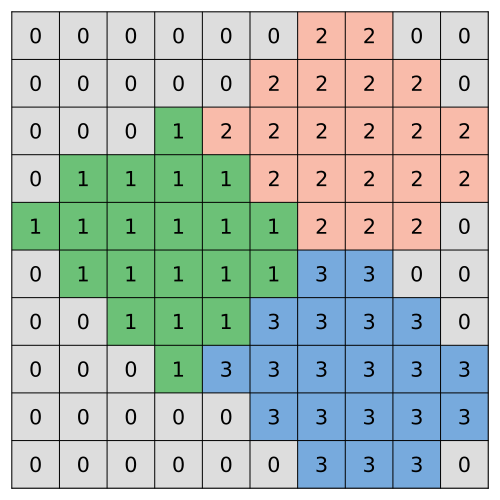
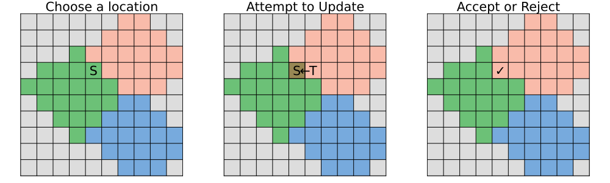

What are Cellular Potts Models?
For the following explanation we will be using this Cellular Potts Model:
using CellularPotts, Graphs, Random
Random.seed!(314)
cpm = CellPotts(
CellSpace(10,10; periodic=false, diagonal=false),
CellState(:Epithelial, 20,3,positions=[(4,6),(8,8),(8,3)]),
[AdhesionPenalty([0 30; 30 0]),VolumePenalty([5])]
)Cell Potts Model:
Grid: 10×10
Cell Counts: [Epithelial → 3]
Model Penalties: Adhesion Volume
Temperature: 20.0
Steps: 0Background
Cellular Potts Models (CPMs) are essentially just non-negative integer matrices with very specific rules and interpretations. A value of zero represents a location in space where no cell is present (which we call "Medium") whereas a nonzero value denotes part of a cell.
Here we have a 10$\times$10 grid with 3 cells all labeled "Epithelial". Note that cells should be connected; for example, all grid entries with a value of 1 are adjacent to each other. In CellularPotts.jl we can choose whether diagonal grid sites are considered adjacent with the diagonal keyword in the CellSpace function.
Step Model Forward
CPMs take discrete time steps to update the cells which is handled by the MHStep! function in CellularPotts.jl. The process of updating takes three basic steps:
- A random grid location called the "source" and an adjacent grid site called "target" is chosen.
- The model attempts to update source to match the target.
- The update is accepted or rejected, given a calculated acceptance rate.
In the example below, the proposal is accepted.
If the source and target are from the same cell, then no update will occur. However, the source or target can be "Medium" possibly leading to the cell increasing or decreasing in size.
Typically, $n$ proposals are attempted where $n$ is the total number of grid sites (100 in this case). Once all proposals are accepted or rejected, the model has taken one step forward.
Penalties
The acceptance probability is governed by an "energy function" $H$ which is continually trying to be minimized. In its simplest form, there are two terms or "penalties" that contribute to the energy function: the AdhesionPenalty and VolumePenalty.
Adhesion
The adhesion penalty encourages adjacent grid sites to have the same value and contributes a positive penalty if there is a mismatch. The strength of the penalty is determined by a symmetric matrix $J$ where the $i^{th}$ and $j^{th}$ entry give the contact penalty for the $i^{th}$ and $j^{th}$ cell type. In our example J might looks like this:
\[J = \begin{bmatrix} 0 & 30\\ 30 & 0 \end{bmatrix}\]
Here, J[1,1] represents the Medium-Medium penalty, J[1,2] and J[2,1] represents the Cell-Medium penalty, J[2,2] and represents the Cell-Cell penalty. Note that we are assuming our cells are all the same type (e.g., Epithelial). If Cell 3 was labeled a T-Cell, for example, then we would add another row and column to $J$.
To calculate the total adhesion penalty, we sum over all neighbors of all grid sites.
function caculateAdhesion(cpm)
#Track total adhesion
totalAdhesion = 0
#Get the adhesion penalty object
AP = cpm.penalties[1]
#Matrix of cell IDs (0,1,2,3) and
cellIDs = cpm.space.nodeIDs
#Matrix cell types (0 → Medium or 1 → Epithelial)
cellTypes = cpm.space.nodeTypes
#Loop through each grid site
for i in LinearIndices(cellIDs)
#What cell is grid site i?
σᵢ = cellIDs[i]
#What type is grid site i?
τᵢ = cellTypes[i]
#Loop through neighbors
for j in neighbors(cpm.space,i)
τⱼ = cellTypes[j]
σⱼ = cellIDs[j]
#Check if the grid sites are from different cells
if σᵢ ≠ σⱼ
totalAdhesion += AP.J[τᵢ,τⱼ]
end
end
end
return(totalAdhesion)
end
println("There are $(caculateAdhesion(cpm)÷30) adhesion penalties")There are 68 adhesion penaltiesIn practice, we don't need to calculate the total adhesion every time because it only changes locally around the source and target grid sites.
The full equation for adhesion would look like this:
\[\text{Total Adhesion Penalty} = \sum_{\substack{i,j \text{ neighbors}\\\\cell(i) \ne cell(j)}} J(\tau_i,\tau_j)\]
Volume
The volume penalty simply sums the square-errors between a cell's current number of grid sites (i.e. volume) and its desired number of grids sites.
\[\text{Penalty} = (V - V_d)^2\]
In our case we set the desired volume was set to 20 in the CellState function.
cpm.state.volumes[1:3]3-element Vector{Int64}:
20
20
20And currently, all our cell volumes match our desired volume so no penalties are added. The value of 5 given to the VolumePenalty function is a constant that multiplies the total volume penalty. Larger values put more weight on this penalty.
\[\text{Total Volume Penalty} = 5 \sum_{i=1}^{3} (V_i - 20)^2\]
Acceptance Probability
CPM uses a Metropolis–Hastings algorithm to determine if the update should be accepted. This is useful because unfavorable changes to the cells can still be accepted with a certain probability which will help avoid local minima.
First we calculate the difference in energy $\Delta H$ between the original and proposed configurations. If the total energy decreases we automatically accept, otherwise we accept with a probability according to a Boltzmann distribution.
\[P = e^{-\Delta H / T}\]
where $P$ is the probability of acceptance and $T$ is a "temperature" parameter. Larger temperatures coincide with less favorable events being accepted.
History and Criticism
CPMs are based off of Ising models from statistical mechanics. However, a lot of physical meaning behind the parameters and ideas borrowed from these models has been lost. For example, the adhesion matrix $J$ used to represent atomic spin-spin interactions between magnetically charged atoms. The temperature parameter $T$ was literal temperature. This loss of physical meaning is one major criticism for CPMs which researchers are actively trying to remedy.